生成时间：2026-10-13 09:05（Asia/Shanghai） ｜ 数据范围：2026-01-01 ~ 2026-08-11
历史行情回放：本页不代表实时价格。信号仅供采购复核，未验证成本节省或误报率。
覆盖 145 个品种，22,362 条记录；107 个品种可排名。窗口只使用此前 30 个日历天，缺价不填充。
复核步骤：核对报价与规格 → 联系供应商确认 → 结合库存和采购需求决定动作 → 记录结果。
| 品种 | 价格（元/斤） | 日环比 | 信号 | 产地 |
|---|---|---|---|---|
| 圆白菜 | 1.15 | +109.1% | 价格偏离、急涨 | 冀 |
| 大白菜 | 0.75 | +41.5% | 急涨 | 冀 |
| 豇豆 | 3.30 | +37.5% | 急涨 | 冀/鲁 |
| 长茄 | 1.15 | +35.3% | 价格偏离、急涨 | 晋/辽 |
| 油麦菜 | 4.75 | +30.1% | 价格偏离、急涨 | 京/冀 |
| 油菜 | 2.25 | +23.3% | 急涨 | 京/冀 |
| 绿菜花 | 1.45 | +20.8% | 急涨 | 冀 |
| 毛冬瓜 | 0.90 | +12.5% | 价格偏离 | 冀/豫/鲁 |
| 荆芥 | 3.50 | -12.5% | 急跌 | 缺失，需补核 |
| 芹菜 | 0.95 | +11.8% | 产地切换 | 冀 |
| 散生菜 | 3.25 | +10.2% | 价格偏离 | 缺失，需补核 |
| 黄瓜 | 3.25 | +8.3% | 产地切换 | 冀/蒙/辽 |
| 芥兰 | 3.25 | -7.1% | 价格偏离 | 缺失，需补核 |
| 木耳菜 | 4.00 | +6.7% | 价格偏离 | 缺失，需补核 |
| 穿心莲 | 4.25 | -5.6% | 价格偏离 | 缺失，需补核 |
| 香菜 | 6.00 | +4.3% | 持续高位 | 冀/蒙 |
| 广茄 | 0.85 | +0.0% | 价格偏离 | 冀 |
| 柿子椒 | 1.95 | +0.0% | 价格偏离、持续高位 | 鲁 |
| 架豆 | 5.00 | +0.0% | 持续高位 | 云/冀 |
| 板栗南瓜 | 1.40 | +0.0% | 价格偏离 | 桂/蒙 |
| 散叶生菜 | 2.50 | +0.0% | 价格偏离、持续高位 | 冀 |
| 贝贝南瓜 | 1.65 | +0.0% | 价格偏离 | 冀/蒙 |
| 豌豆苗 | 7.25 | +0.0% | 价格偏离 | 缺失，需补核 |
| 蒿子秆 | 8.00 | +0.0% | 价格偏离 | 缺失，需补核 |
| 金丝南瓜 | 0.90 | +0.0% | 价格偏离 | 冀/蒙 |
| 品种 | 均价(元/斤) | 日波动率 | 异常率 | 观测天数 | 产地可比较日 | 风险评分 |
|---|---|---|---|---|---|---|
| 鸡毛菜 | 3.93 | 0.106 | 22.9% | 153 | 0 | 52.26 |
| 苦菊 | 3.03 | 0.111 | 26.9% | 216 | 214 | 50.41 |
| 快菜 | 1.17 | 0.178 | 25.5% | 153 | 0 | 50.19 |
| 水萝卜 | 2.14 | 0.189 | 26.3% | 179 | 89 | 49.95 |
| 蒿子秆 | 3.50 | 0.090 | 20.3% | 153 | 0 | 48.71 |
| 油菜 | 1.07 | 0.159 | 31.0% | 216 | 214 | 48.39 |
| 大葱 | 1.37 | 0.031 | 15.3% | 216 | 214 | 47.42 |
| 茴香 | 2.45 | 0.132 | 24.5% | 216 | 214 | 46.29 |
| 荠菜 | 8.34 | 0.320 | 25.3% | 150 | 0 | 46.29 |
| 散叶生菜 | 1.60 | 0.065 | 15.3% | 216 | 214 | 46.26 |
| 扁豆 | 4.32 | 0.075 | 19.0% | 216 | 214 | 45.58 |
| 南北瓜 | 1.42 | 0.023 | 13.0% | 216 | 214 | 45.29 |
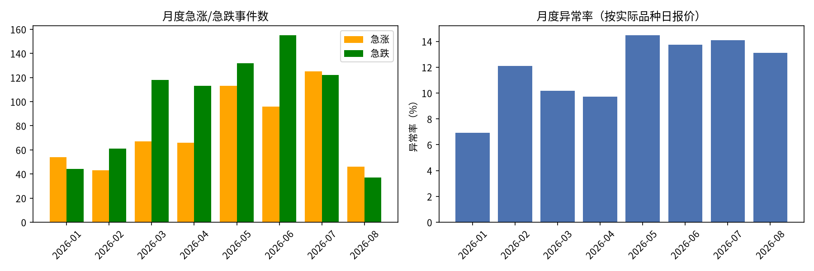
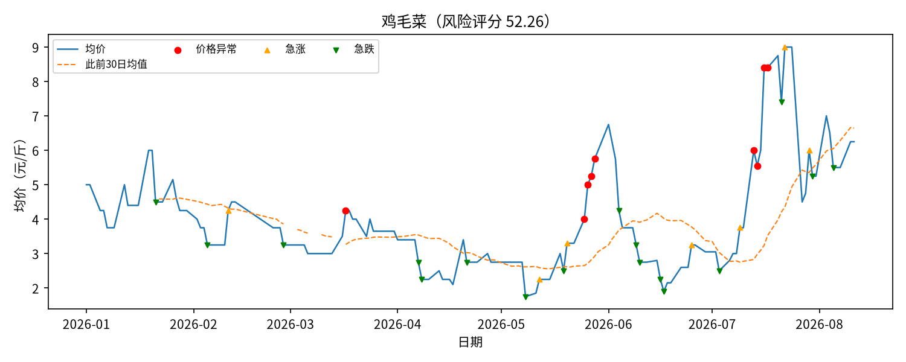
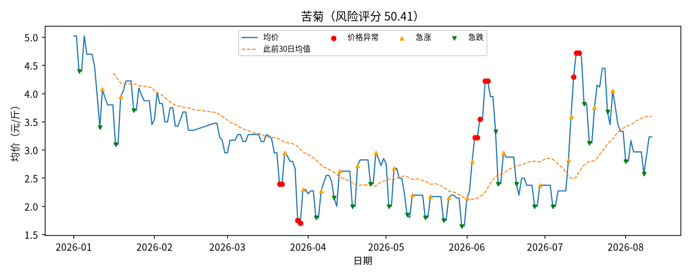
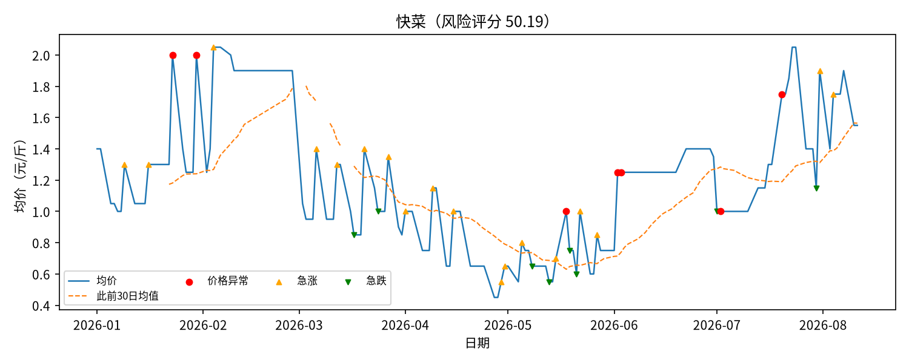
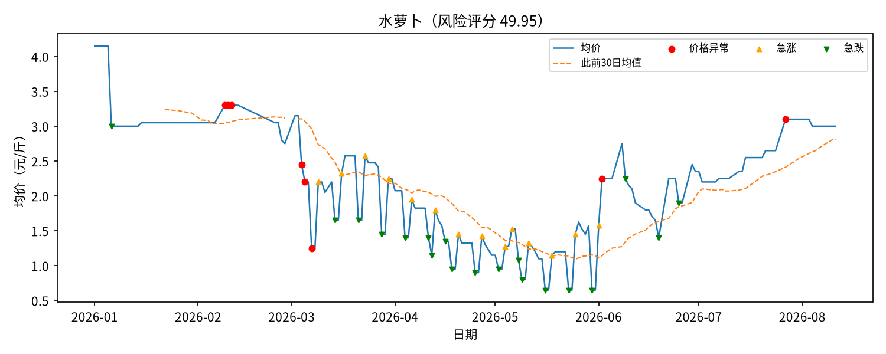
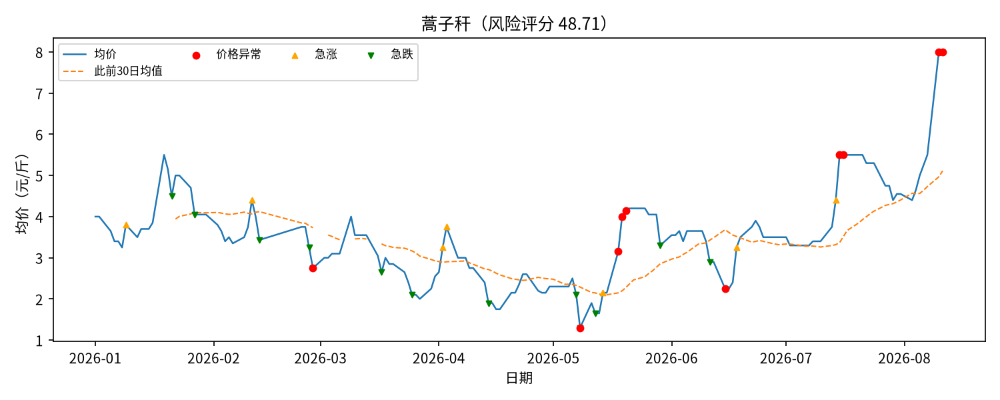
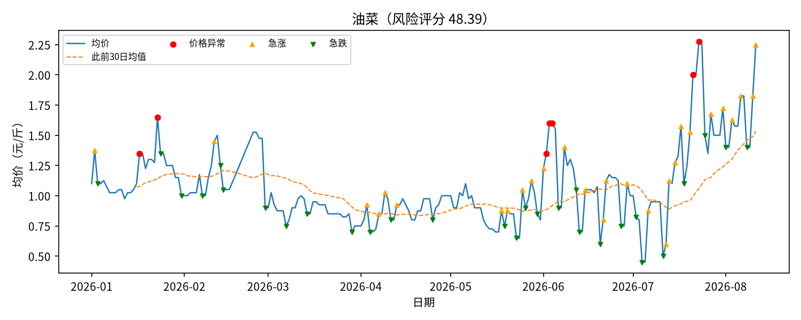
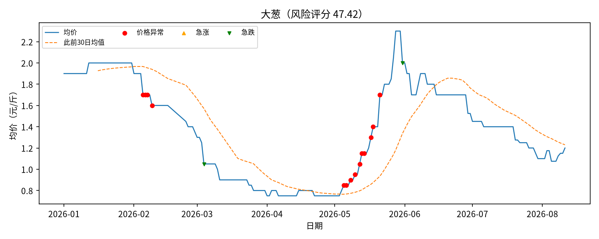
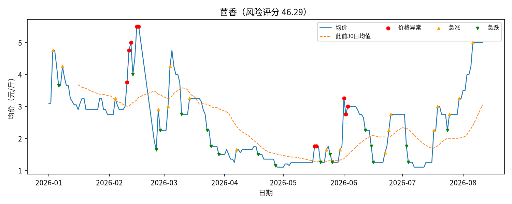
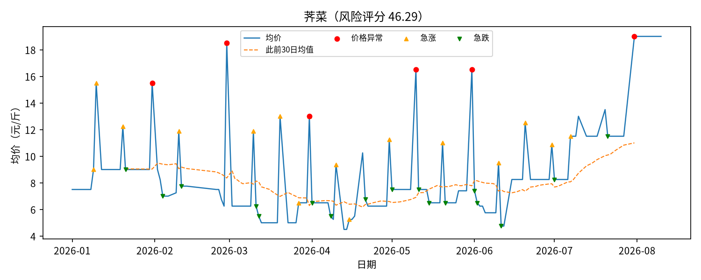
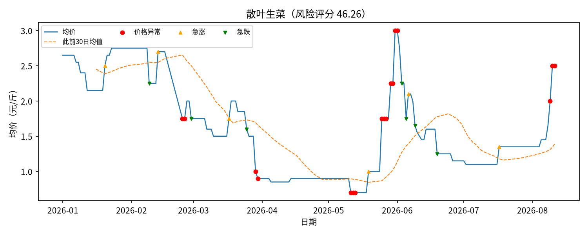
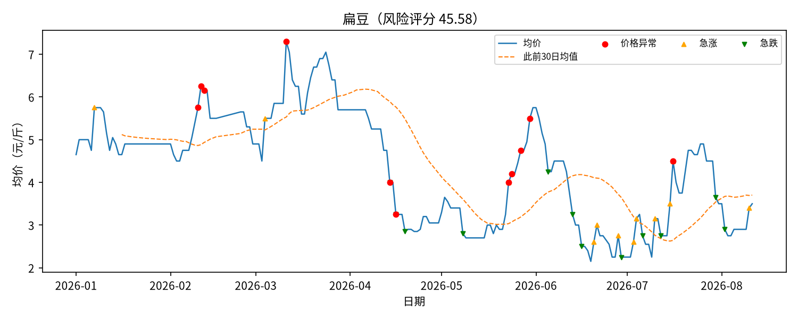
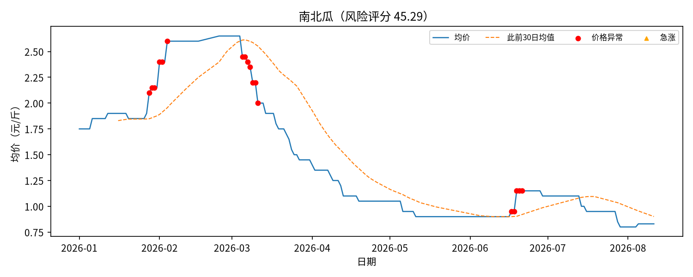